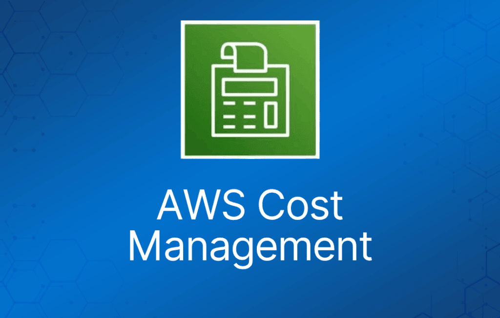

AWS 提供了一整套成本管理和计费工具，帮助你了解和管理成本、报告资源利用率，并在达到或超过阈值时触发告警。
AWS Cost Explorer

AWS Cost Explorer 是一个免费工具，让你可以以图表形式查看成本。
你可以查看过去 13 个月的成本数据，并预测未来三个月可能的支出。
Cost Explorer 可用于发现你在 AWS 资源上的支出随时间变化的模式，并定位成本问题区域。
Cost Explorer 可以帮助你识别服务使用统计信息，例如：
- 你使用最多的服务是哪些。
- 查看哪个 AZ 流量最大的指标。
- 哪个关联账户（linked account）使用最多。
AWS 成本与使用情况报告（AWS Cost & Usage Report）
将 AWS 账单报告发布到 Amazon S3 bucket。
报告可按以下维度拆分成本：
- 小时、天、月、产品、产品资源、标签。
报告每天最多可更新三次。
可以使用 AWS CUR API 创建、检索和删除报告。
AWS Price List API
查询 AWS 服务的价格。
Price List Service API（又称 Query API）—— 以 JSON 方式查询。
AWS Price List API（又称 Bulk API）—— 以 HTML 方式查询。
价格变动时可通过 Amazon SNS 接收告警。
AWS Budgets
用于跨多个维度（如服务或 Cost Category）跟踪成本、用量，以及 Reserved Instances 和 Savings Plans 的覆盖率与利用率。
当实际或预测的成本/用量超过预算上限，或者 RI 和 Savings Plans 的覆盖率/利用率低于阈值时，会通过事件驱动的告警通知提醒你。
可以根据业务需要创建年度、季度、月度甚至每日预算。
成本分配标签（Cost Allocation Tags）
要跟踪与项目和环境相关的成本，应在相关资源上应用成本分配标签。
成本分配标签用于在细粒度层面跟踪 AWS 成本。
激活成本分配标签后，AWS 会使用这些标签在成本分配报告中整理你的资源成本，让你更方便地对 AWS 成本进行分类和跟踪。
AWS 成本类别（AWS Cost Categories）
AWS Cost Categories 是 AWS 成本管理产品套件中的一项功能，让你能够根据自己的需要，将成本和用量信息归入有意义的类别。
你可以创建自定义类别，并基于账户、标签、服务、费用类型甚至其他成本类别等维度定义规则，将成本和用量信息映射到这些类别中。
成本类别设置并启用后，从当月开始，你就可以在 AWS Cost Explorer、AWS Budgets 和 AWS Cost and Usage Report (CUR) 中按这些类别查看成本和用量信息。